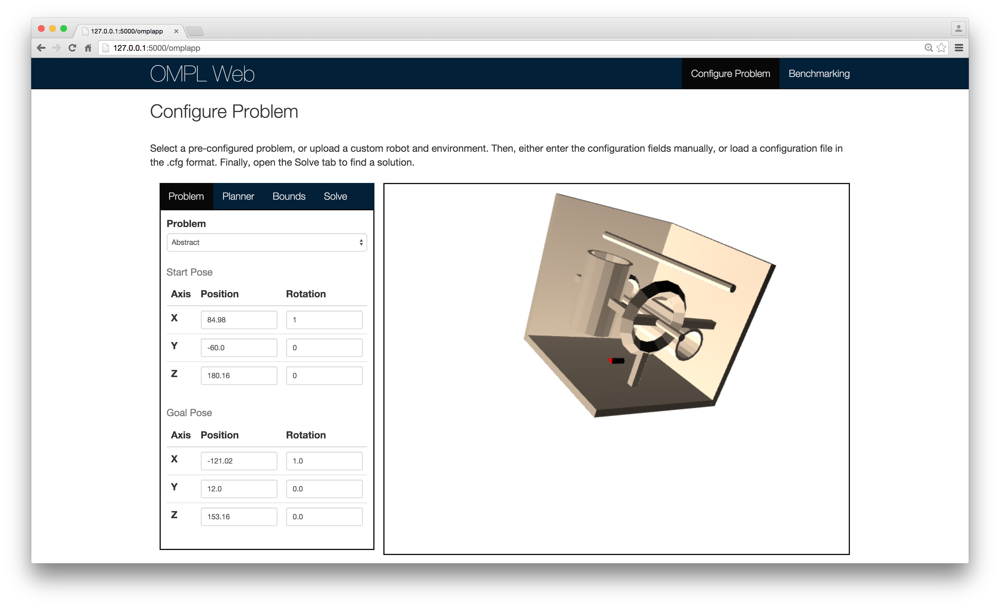
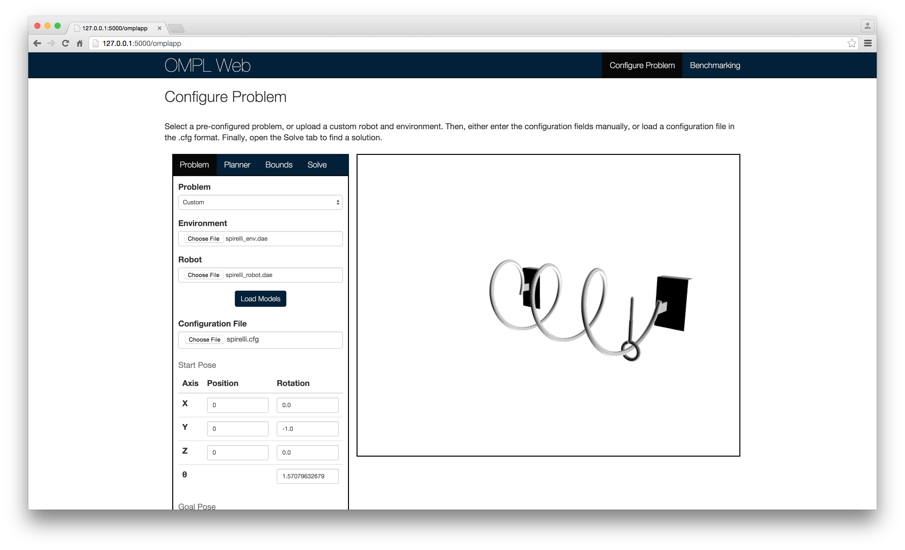

2015-06-16
Significant progress has been made in the past week or so and the application looks and behaves very differently than before. Furthermore, the user interface has been completely overhauled to accommodate new features and look cleaner.

The biggest change in terms of the interface is the addition of the visualization to the configuration page. Now, the robot's position will be updated to reflect any changes the user makes in the configuration panel. When the problem has been configured to the user's liking and solved, the solution path (if one was found) will be drawn and animated.
The visualization is being built primarily using WebGL with the three.js library.
If the user selects an existing problem from the Problem
drop down menu, a request is sent to the server to retrieve that
problem's configuration information and its robot and environment
models. The configuration fields are then filled in with the information
from the server and the models are loaded and drawn. The screenshot
above is state of the interface when an existing problem has been
selected.
If the user selects a custom problem from the Problem
drop down menu, then the sidebar will expand to reveal options for
uploading custom robot and environment models and, optionally, a
configuration file. Once these files have been selected, the will be
uploaded to the server and drawn, as seen in the screenshot below.

The Planner tab allows the user to select which planner
to use for solving the problem. When a planner is selected, the default
values for that planner's parameters are retrieved from the server and
displayed. The user can edit these options if they wish. The
Bounds tab allows the user to modify the bounding box for
the problem, if they are dissatisfied with the default values for that
environment.
Finally, from Solve tab, the user can name the problem
and specify a time limit for solving the problem. If all the required
fields are satisfied, they can click the solve button and await the
results. At this point the problem is sent to the server for processing.
When the results are returned, the information is displayed within the
pane. If a successful solution path was found, it will be drawn and the
robot will be animated traveling the path. This animation is still in
development.